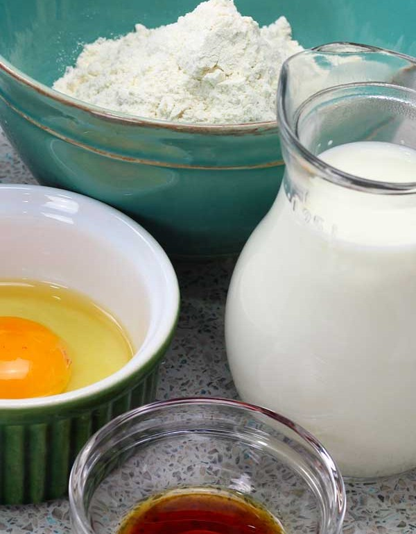
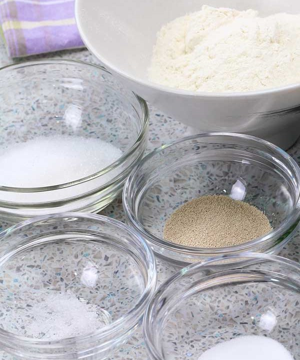
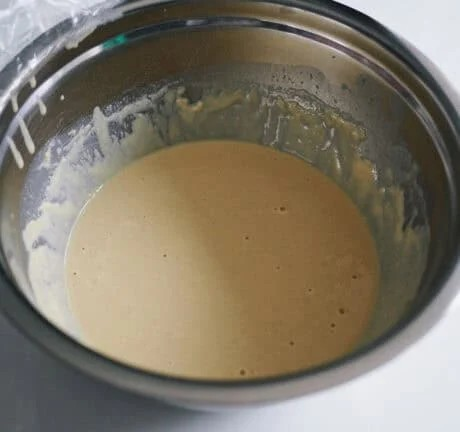
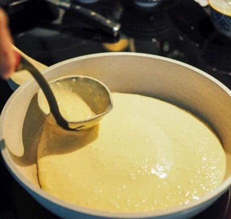
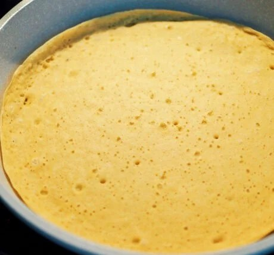
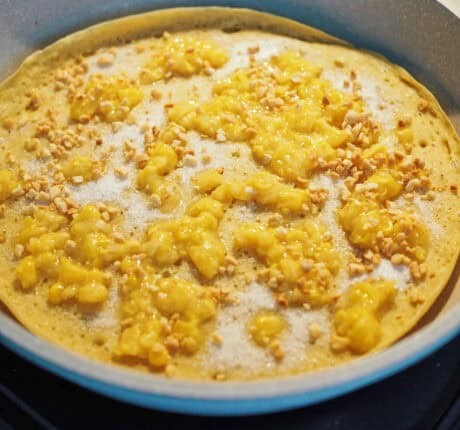
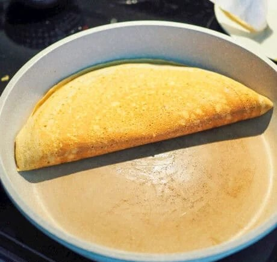

Apam Balik Recipe
Ingredients:
- all purpose flour
- baking soda
- dry active yeast
- eggs
- vanilla extract
- white granulated sugar
- milk
- salt
- crushed peanuts
- crushed creamed corn
- unsalted butter


Instructions:
- Mix all purpose flour, baking soda, milk, dry active yeast, vanilla extract, eggs, sugar and salt. Whisk the
mixture until all are combined. Let the yeast do the job before going to the next step

- Cover the pan with butter and spread the mixture out into a even pancake.

- Cover the pan with a lid. Let this cook until bubbles form all over the pancake, about 2-3 minutes.

- Once the bubbles have formed, evenly sprinkle a generous amount of sugar, creamed corn, crushed peanuts and
small slices of butter across the pancake.

- After 2 minutes, fold one side of the pancake over the other side to create a semi-circle. Congratulations, a
delicious pancake has been made.

← Back to Recipes